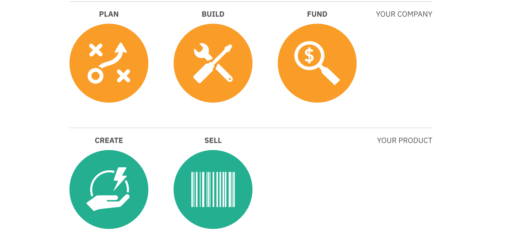

The Good Food Institute // The Good Food Startup Manual
The Good Food Institute works with innovators, investors, and companies to make market-disrupting plant-based products a reality. This digital manual was created to help start-ups achieve this goal. We took a pared down design approach, using iconography and colour as wayfinding devices.
Discipline
/ Digital publishing
Role
/ Concept, design, illustration, production
